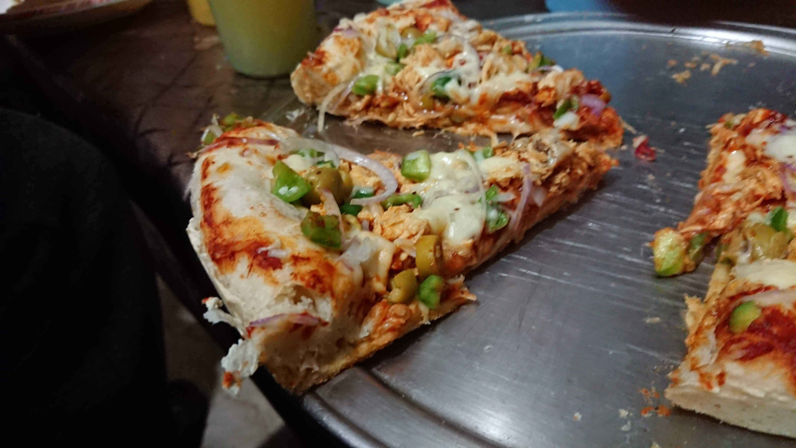

Description
Requires some pre-preparation, but is pretty easy to make. The image shows a pizza with the optional ingredients included.
Goes well with a Coca Cola or Pepsi.
Ingredients
- Flour 1 KG
- Yeast 1-2 small sachets
- Pepperoni, sliced (as needed)
- Chicken 0.5 KG, cooked and cut into small chunks (optional)
- Olives, sliced (optional)
- Mushrooms, sliced (optional)
- Onions, finely chopped
- Bell pepper, finely chopped (optional)
- Mozzarella and Cheddar Cheese 0.5 KG each, shredded
- Tomato Puree 1 large can (500-600g ideally) or store-bought pizza sauce
Preparation
- Knead the flour with a pinch of salt and the two yeast packets added and let it rest for a few hours or overnight.
- For the sauce (if using tomato puree), season to taste with salt, black pepper, cayenne pepper, a fresh basil leaf, a pinch of oregano, 2 cloves of garlic (minced),
a splash of white vinegar, and half a cup of water. Cook on medium to low heat in a saucepan until you reach a sauce-like consistency.
- For the optional ingredients, use the veggies as described. Cook the chicken in a sauce pan with some butter, and season it to your liking. (I cook it with a ginger garlic paste, salt, red chilli powder and some black pepper)
- Put some flour on your hands and your kitchen counter top, portion out the pizza dough to about 100-120g and roll it into a circular shape, it should be around 1cm thick.
- Time to assemble! Add a couple of table spoons of the sauce on to the dough, spreading it out to cover it all evenly.
- Add your desired toppings, you can add them before the cheese (the cheese on top prevents them from falling off), or add them after the cheese to make it look nicer.
- Pre-heat your oven to 400F or 200C, place the pizza pan in the oven for a minute or two, then take it out and lubricate it with butter to prevent the pizza from sticking to the pan.
- Place your pizza inside the pan, it's easier to shape and spread out if the pan is warm. Cut the excess dough off if it's going off the sides.
- Bake for about 10-15 minutes, then turn the pan inside the oven about halfway around in case you have a regular oven and not a convection oven.
- Cook for an additional 5-10 minutes. At this point, check the bottom of the pizza by inserting a spatula vertically and gently on one side. It should have a solid white crust with light brown spots when done.
- Take it out on a serving tray, slice and serve!
Return to recipe list